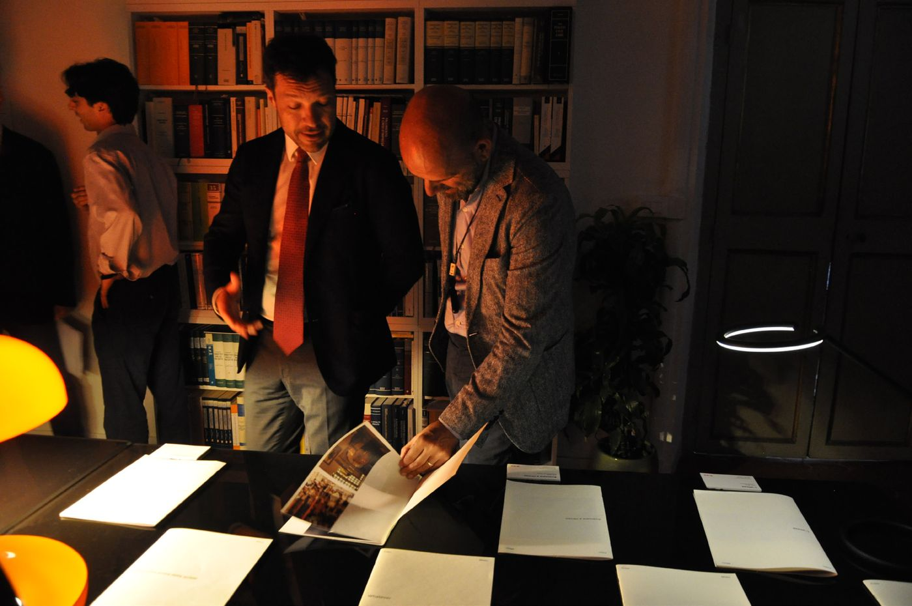
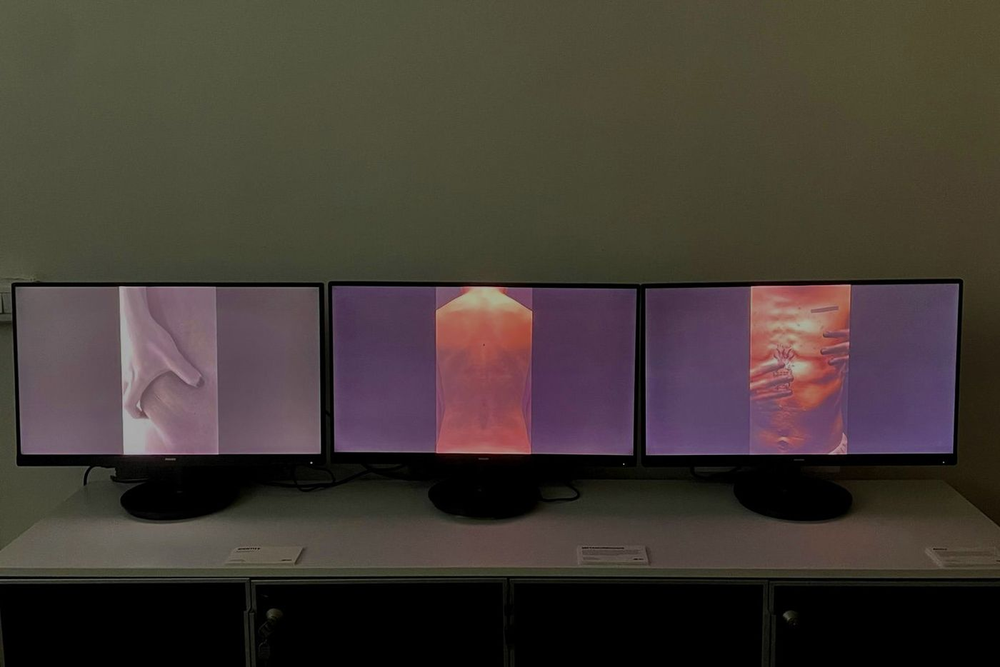
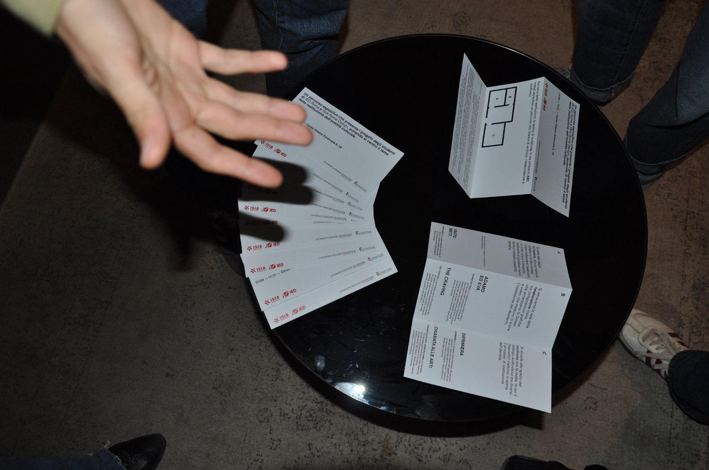
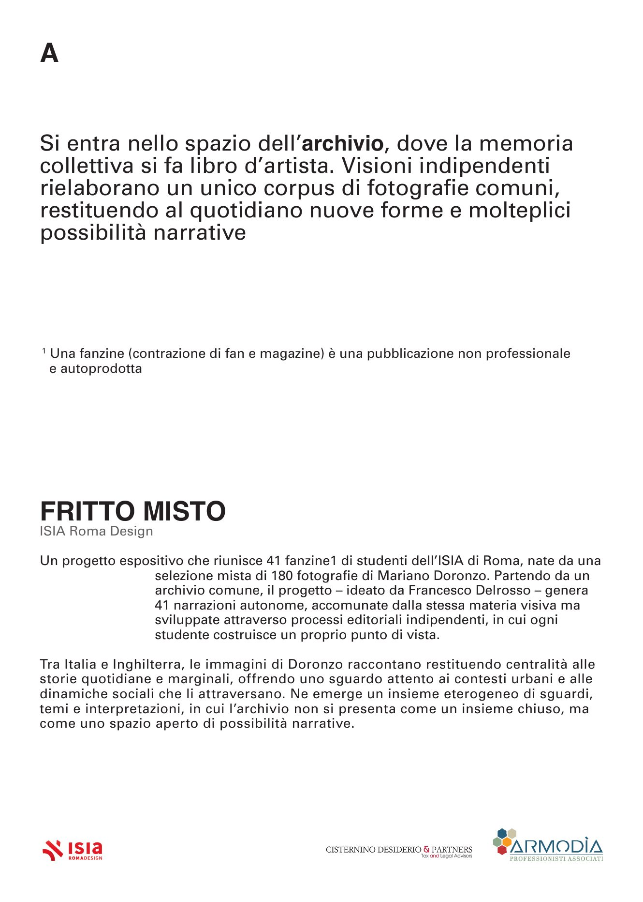

Percorso espositivo
21 aprile 2026, 18:30
Corso Vittorio Emanuele II 18, Roma
Natale di Roma e Giornata dell’innovazione e della creatività
Un percorso espositivo che presenta i progetti degli studenti di IED Roma e ISIA Roma Design, ponendo al centro il tema della restituzione dell’eredità culturale.
Restituire
Restituire non significa trasmettere in modo passivo ciò che si riceve, ma rielaborarlo criticamente attraverso pratiche di selezione, trasformazione e ridefinizione. Il progetto diventa lo strumento attraverso cui il sapere viene rimesso in circolo, reso accessibile e adattato alle condizioni del presente.
L’innovazione emerge come esito di una relazione attiva tra eredità e cambiamento: il patrimonio culturale non viene conservato in modo statico, ma continuamente reinterpretato. I lavori esposti testimoniano questa capacità di intervento sul presente.
La mostra ha trasformato uno studio professionale, uno spazio di lavoro nato per tutt’altro scopo, in un percorso di tre stanze. Con Ludovico Genone e Prisca Bonfini ho curato la direzione artistica; mio è il progetto grafico, dai pannelli ai materiali stampati.
La pianta
Lo spazio si divide in tre ambienti, un percorso non lineare di archivio, rielaborazione e confronto.
● Ingresso. Clic su una stanza per raggiungerla.
Archivio
Si entra nello spazio dell’archivio, dove la memoria collettiva si fa libro d’artista. Visioni indipendenti rielaborano un unico corpus di fotografie comuni, restituendo al quotidiano nuove forme e molteplici possibilità narrative.



Fritto Misto
ISIA Roma DesignUn progetto espositivo che riunisce 41 fanzine di studenti dell’ISIA di Roma, nate da una selezione mista di 180 fotografie di Mariano Doronzo. Partendo da un archivio comune, il progetto, ideato da Francesco Delrosso, genera 41 narrazioni autonome, accomunate dalla stessa materia visiva ma sviluppate attraverso processi editoriali indipendenti.
Rielaborazione
Si attraversa la sala della rielaborazione visiva, tra composizioni grafiche che sintetizzano la Genesi e video che mettono in scena l’ossessione del desiderio.


Adamo ed Eva
ISIA Roma DesignUn’indagine sulla sintesi grafica e sul recupero dell’immagine. Partendo da frammenti di dipinti classici, l’esercitazione esplora la graficizzazione: porzioni di fotografie sgranate e illeggibili vengono isolate e ricostruite fino a diventare segni grafici puliti. Il racconto biblico è riarticolato in una griglia 3×3: nove tavole in cui il solo dettaglio delle mani porta l’intera narrazione.
The Craving
IED RomaUna trilogia visiva sull’ossessione del desiderio. In un limbo claustrofobico di pareti rosse e sussurri invisibili, una figura candida e scultorea, segnata da crepe, affronta le tensioni del desiderio: l’estasi del possesso che svuota, il corpo che insegue l’oggetto che gli sfugge, la meta raggiunta che non porta catarsi.
Confronto
Si accede allo spazio del confronto con la realtà, dove il dialogo audiovisivo tra diversi dispositivi mette in scena il processo di costruzione dell’identità.

Chiamata alle arti, stories that matter
IED RomaL’edizione 2026 di IED Factory, il ciclo annuale di workshop interdisciplinari guidati da artisti internazionali. 200 giovani creativi, con 9 artisti di ambiti diversi, hanno dato forma a visioni e narrazioni su un presente complesso: identità, resistenza, corpo, relazione e velocità.
Diprimæra
IED RomaUn cortometraggio che sposta il baricentro della narrazione dall’oggettività dei fatti alla soggettività dell’inconscio: frammenti di zone sfocate e memorie sommerse, per recuperare l’essenza umana in un mondo iper-razionale.
Il progetto grafico
Sei pannelli: due introducono la mostra e la pianta, uno raccoglie i crediti, tre accompagnano le stanze. Clic per ingrandire.




